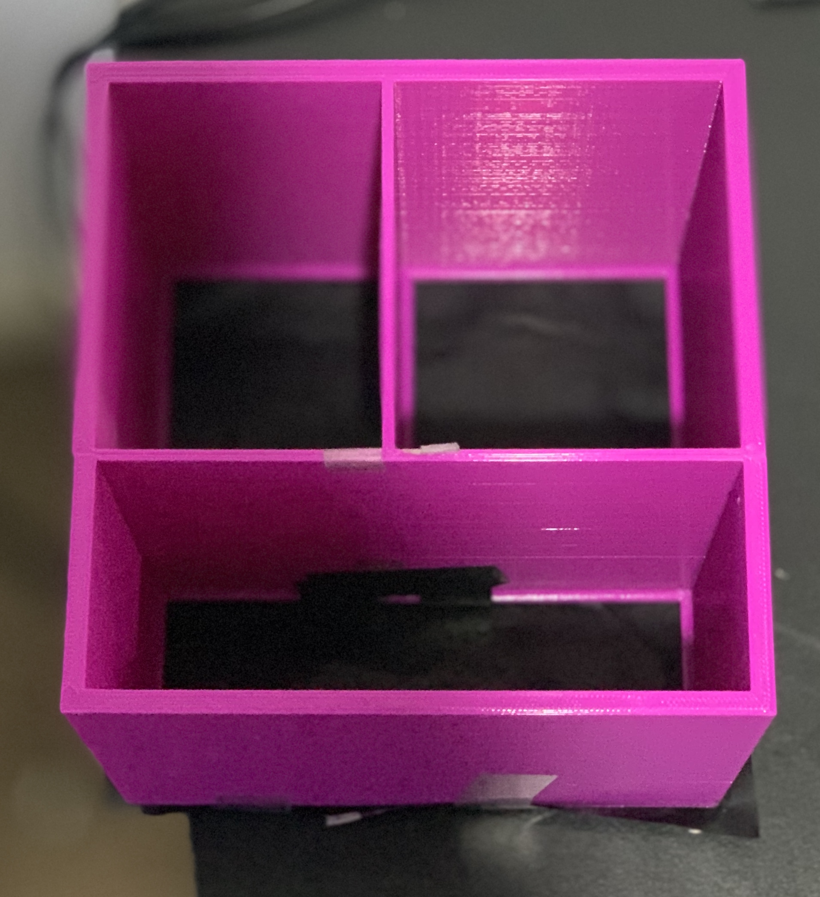
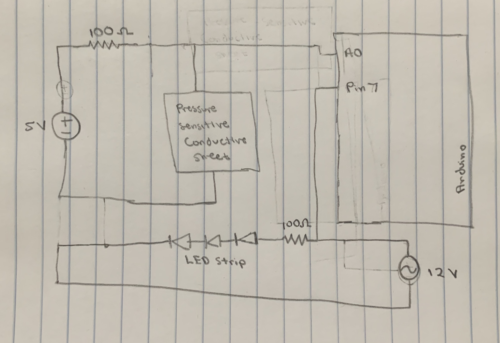
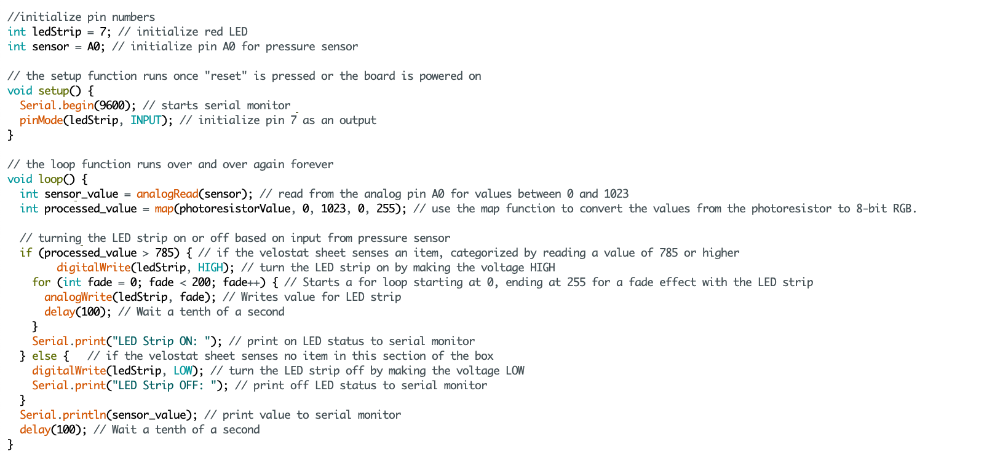

My project was motivated by a friend who had trouble finding their glasses in the morning. I felt challenged to design a solution for people with impaired vision to not only have a consistent place to put their items, but have it be easily identified with visiual cues. This solution became the Lost and Found Box: a 3D printed box with three compartments that is wrapped by an LED strip. The common use case with this box is that a user would put their glasses or any other item in the box, and sensors along the bottom of the box would detect any pressure or weight and notify the user by signaling lights outside of the box. The original vision for the box was that there would be different visual cues for each compartment to know exactly what parts are being occupied. In the end, I managed to come up with a feasible solution that would simply notify the user if anything was in either of the three compartments by utilizing an LED strip that fades its lights.

With the help of a friend, the first thing I did was create a file to 3D print the box. To have variety, the three compartments are all of different size. The bottom of the box had the framework to separate the three compartments, but was otherwise hollow to place pressure-sensitive conductive sheets (velostat/linqstat). From there, I cut out three separate sheets to fill in the spaces across the bottom of the box to. Then, I created a circuit that is similar to my assignment A4 in which I used data from a photoresistor to trigger the LED strip. For the most part circuit was similar, but in this case, instead of a photoresistor I had to utilize alligator strips to connect to the top and bottom surfaces of each conductive sheet.
I was honestly struggling for 99 percent of this project. This was the first time I felt totally free to construct my own product and apply what I learned. Throughout this entire process I realized so many things that I didn't anticipate to be problems. The first of my problems was that I never 3D printed before. Even with help, the box wasn't a realistic product because its size allowed for items to fit but not. Secondly, I ended up playing with a million circuit combinations to create my solution. I really pushed for multiple visual cues to represent something in each compartment, but ultimately I had to reroute because of how I tried to implement it. I also had a very hard time hiding the breadboard, realizing that it was a much bigger challenge than putting it under the box and hiding it with some cardboard. Lastly, so many struggles came with using a new sensor. It took me a while to try to get it to work and sense values that reacted to pressure, and wasn't fully convinced of its operations because of delayed reactions. I didn't even know what values to look for, but eventually I was able to see when pressure was being sensed and found a threshold to trigger the LED strip by seeing what a common value interpeted is when nothing in the box. All in all, these problems made me to think, taught me patience, and allowed me to grow in my physical computing skills.
 I modeled the circuit after assigment A4, however instead of utilizing a photoresistor as my input, I used the pressure sensitive sheets.
 The code interprets values sensed from the sheets that are put onto the serial monitor. If something is sensed from an appropriate weight, the LED Strip turns on with a fade.